Nivéo - L’application de visualisation de la neige
Nivéo, neige, hauteur de neige, Météo-France, DPClim, France, CI/CD, DevSecOps, GitHub Pages, AWS, DynamoDB, Lambda, Python, Astro, MapLibre GL JS, Chart.js, automatisation, climat, nivologie, data viz, visualisation
1 Introduction
Nivéo est une application web gratuite qui collecte, structure et visualise en continu les observations de neige issues des APIs publiques Météo‑France (1).
- Automatisation complète sans intervantion humaine : collecte des données (API Météo-France), ingestion (Python), stockage (AWS) et visualisation (GitHub Pages).
- CI/CD : workflows GitHub Actions planifiés (hebdomadaire pour les stations, quotidien pour les observations) et déclenchés par commit (IaC, déploiement), avec gestion des conflits.
- DevSecOps : lien GitHub-AWS sans clé longue durée (OIDC), secrets chiffrés, permissions IAM minimales, surface d’attaque réduite par site statique.
- Observabilité et fiabilité : journaux horodatés, contrôles automatiques (formatage, validation), respect des limites API, déploiements reproductibles.
- Data engineering sobre et Cloud Architect léger : jeux JSON versionnés, base NoSQL simple, mises à jour régulières, aucune opération manuelle.
- Optimisation coût‑performance : GitHub Actions, GitHub Pages, branche AWS free‑tier permanent (DynamoDB et Lambda export vers GitHub) avec nettoyage automatique (TTL 11 jours).
- Front visuel et léger : Astro, MapLibre GL JS, Chart.js avec deploiement automatisé.
 Figure 1 : Pipeline du projet
{kind=link}
2 Contexte et problématique
Les données de neige d’intérêt opérationnel existent mais sont éparpillées, hétérogènes et contraintes par des limites de débit. L’objectif de Nivéo est de proposer une chaîne reproductible et gratuite qui :
- Récupère régulièrement les observations de neige (6 min / heure / jour) sur les stations Météo‑France via DPClim.
- Structure ces observations dans des formats simples, stables et versionnables (JSON), publiés comme artefacts statiques et enregistrés dans une base de données NoSQL sur le Cloud (AWS DynamoDB).
- Expose des vues cartographiques et temporelles prêtes à l’emploi pour des usages terrain (stations, vallées, routes, domaines skiables), sans serveur ni base de données payante.
3 Données
- Fournisseur: Météo‑France, APIs publiques DPClim.
- Variables:
NEIGETOT(maximum de la hauteur de neige),NEIGETOT06(hauteur de neige à 06h),HNEIGEF(hauteur de neige fraiche). - Échelles: infra‑horaire (6 min), horaire, quotidienne.
- Stations: métadonnées stations mises à jour hebdomadairement (filtre d’altitude configurable, ex.
ALT_SELECT=1000). - Contraintes: authentification Basic + jeton, rate‑limit 50 requêtes/minute avec respect strict de Météo-France.
4 Approche et méthodologie
4.1 Mises à jour régulières
- Mise à jour des informations liées aux stations chaque vendredi 23:00 UTC.
- Collecte quotidienne des relevés de neige à 06:00 UTC avec fenêtre glissante
J‑Xpour rattraper les données qui n’ont pas été mises à jour à temps par Météo-France. - Déploiement automatique la visualisation à chaque mise à jour.
4.2 Gratuit par conception
- Hébergement via GitHub Pages.
- Automatisation via GitHub Actions.
- Base de données AWS Cloud en NoSQL (DynamoDB) avec une gratuité permanente pour le quota de données utilisé ici.
- La branche AWS (DynamoDB TTL 11 j, Lambda export vers GitHub) est optionnelle mais sert pour pratiquer l’IaC et le CI/CD cloud sans lock‑in et sans coût dans les free tiers.
4.3 Justifications d’organisation
- Simplicité opérable : un JSON = une unité logique, traçable et diffable. Rebuilds ciblés.
- CI rapide : aucune étape inutile, déploiement idempotent.
- Observabilité : logs par workflow, paramètres environnement documentés, dry‑runs possibles.
- Reproductibilité : Infra as Code (Terraform) côté entraînement ; configuration as‑code côté ingestion.
5 Technologies utilisées
| Catégorie | Outils |
|---|---|
| Ingestion | Python 3.11, requests, python-dateutil |
| Automatisation | GitHub Actions (cron, concurrency, secrets chiffrés) |
| Frontend | Astro, MapLibre GL JS, Chart.js (Node 20) |
| Infra (option) | Terraform 1.13.x, AWS (Lambda, DynamoDB avec TTL 11 jours) — pas de S3 |
| Sécurité | Secrets chiffrés GitHub, OIDC pour l’intégration AWS |
6 Liens vers le projet
- Code source GitHub: https://github.com/NCSdecoopman/niveo
- Application de visualisation: https://ncsdecoopman.github.io/niveo/
7 Cas d’usage et perspectives
Opérations montagne : suivi des chutes de neige et de la hauteur pour domaines skiables, routes, refuges.
Analyse spatiale : comparaison multi‑stations, altitudes, expositions et export CSV pour analyses tierces.
Support à la décision : préparation des pistes, logistique, sécurité.
Évolutions prévues :
- Filtres cartographiques avancés (altitude, département, fenêtre temporelle).
- Séries temporelles cliquables par station.
- Export raster léger pour intégration SIG.